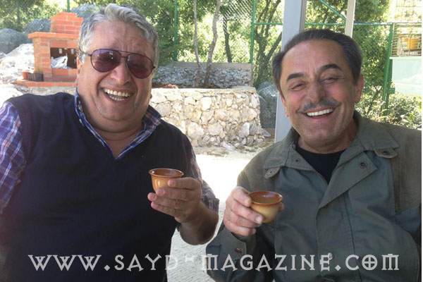

قصص الصيد مع الممثل الكوميدي الفنان اللبناني بيار شمعون لها طعم مختلف، فهذا الرجل خفيف الظل وطريف جداً وصريح وعفوي، يقول ما له وما عليه دون البحث عن مبررات وبطولات، عادة ما يستعملها "الصيادون" الكذبة. فالصيد عنده كل حياته وعلاقته العميقة مع الطبيعة وليس عرض عضلات وهستيريا قتل طيور.. التقته مجلة "صيد "وكان هذا الحوار حوار نظيرة قبلان تصوير حسين ادريس هل انت مسرور بواقع الصيد الذي نعيشه اليوم في لبنان؟ انا مسرور لان هناك عوامل طبيعية غيّرت مسار الطير لتحميه من اجرام مجموعات جاهلة تحمل البنادق وتنقص كل ما يطير امامها دون وعي وخبرة. 600 الف شخص يمارس الصيد في لبنان اكبر خطر على البيئة، ولهذا نحن بحاجة الى تنظيم وتشدد في ملاحقة المخالفين. الى اي مدى اثر الصيد في حياتك؟ لدرجة انني تركت عملي بسببه وكنت سندباد رحلات الصيد الى سوريا لمدة 17 سنة. وما زلت اشكر ربي لانه اعطاني متعة الصيد فهو متنفس وتواصل حقيقي مع الذات والطبيعة. انا اليوم في 56 من العمر، " اذا ما مارست الصيد رح عجّز وابقى بالبيت ". ما اكثر ما يزعجك اليوم في ممارسات الصيد ؟ شباك الصيد على الساحل وعلى مداخل ممرات الطيور التي سببت ابادة الطير، والدولة لم تحرك ساكناً. وايضاً نقص طريدة الـ "سمّن" بسبب ماكينات الصوت التي تُوضع قرب شجر مضاء في الليل على السطوح. ( يضيف) لقد دعيت اكثر من مرة لممارسة هذا الصيد ولكن لم ولن افعل، فأنا صياد .قال في اللقاء - ليس فقط في لبنان يوجد صيد جائر ففي مصر وفلسطين تُباد الطيور بالشباك المنصوبة على البحر ولهذا يجب على الجمعيات البيئية العالمية الضغط لمنع هذه المجازر التي هددت الطبيعة والهواية. - اول بندقية لي كانت بندقية " دك " وانفجرت بعد ان حشوتها كثيراً ظناً مني انني احصل على عدد اكثر من الطيور بهذه الطريقة. - لقد تبولت في جزمة صياد صديقي خلال رحلة صيد في منطقة نائية في سوريا، حيث كانت الكلاب المفترسة حولنا في الخارج والمرحاض يبعد عن الغرفة عدة امتار " ما كنت مسترجي اطلع لبرا" . - الراحل الصديق ملحم بركات كان " ينشرني " حين نتفق على الذهاب في رحلة صيد ويأتي ليأخذني بسيارته واكون" غاطس بالنوم " ويقول لي ..... انا ملحم بركات "كيف بتنطّرني بالسيارة". - ملحم كفيلمون وهبي كانا يحبان الصيد لاجل العيش في الطبيعة والاستفادة منها في التلحين. - ملحم كان يكتفي بالعدد القليل ويحب الجلسة في الطبيعة. لقد كان أمهر مني في الصيد ولكنه كان يحب طريقة صيدي. - كلنا قمنا بأخطاء ولكن العمر يجعلنا حكماء اكثر، وهوس قتل الطيور ليس صيداً. - كان هناك الكثير من الطرائد وكانت اسراب المطوق في البقاع تحجب النظر من امامنا حين كانت تهب دفعة واحدة من الاراضي الزراعية. - ذهبت في رحلة صيد للحجال في جرود العاقورة " كنت متت من التعب" فصيد الحجل يحتاج الى هضاب صغيرة كما في الجنوب وقد اصطدت هناك عام 1985. - من المعيب ان تجري الدولة امتحانا لصياد فوق الخمسين من العمر فهذه اهانة. - الدولة قامت بمنع جائر للصيد عوضاً عن تنظيمه، وهذا احتقار للمواطن فيها. - يجب ان تقام مزراع لتربية طرائد الصيد وإعادة تغذية الطبيعة بها وتعزيز هواية الصيد بطريقة مسؤولة. - في سوريا كان الصيد متوفراً بكثرة وعدد الصيادين ليس كبيراً، ولهذا كان الصيد ممتعاً. - اصبت 3 مرات اثناء الصيد في منطقة العريضة على الحدود السورية في ارض استأجرتها للصيد ولهذا فضلت الهرب. - لا يمكن ان استمتع بالصيد بالتسابق على صيد طريدة، فالصيد هو مزاج ومهارة ومتعة وهدوء. - لقد تضررت سمعة الصياد بسبب ما يفعله القواصون. - الكلبة التي كنت املكها قفزت من الطابق الرابع بسبب عدم اخذها لوقت طويل في رحلة صيد وكادت ان تموت. - الرئيس كميل شمعون كان رمزا للصياد المحترف وكنا نتمثل به، وقد كان يزورنا في ضيعتنا "سرعين" ويأخذ كلب جدي الذائع الصيت معه الى الصيد. - الصيد رياضة الملوك وهنا في لبنان " كلن ملوك " (يضحك). - كنت مغرماً بالصيد منذ الرابعة من عمري وكانوا يخبروني انني كنت اقول لجدي "وازو وازو". وفي احدى المرات مزقت " اللحاف " وانا نائم واحلم ان جدي لم يصب العصفور. - لست من هواة جمع السلاح وافضّل اقتناء الصور واللوحات الجمالية للصيد، لان هذا له علاقة بالمخيلة والحلم والجمال اكثر. - لم يعد لدينا مساحات للصيد في لبنان فالعمارات كثرت في الريف. - مكافحة الثعلب ضرورية لحماية بيض الحجل والفري. - يوجد مجموعات محترمة من الصيادين في لبنان ولكنها قليلة جدا. - لا احب صيد الخنزير البري ولا اكل لحمه .. فقط المقانق والكفتة ( يضحك). - الخنزير البري يهدد ارزاق الفلاح واراضيه الزراعية ويجب صيده على مدار السنة. - يعجبني الصياد اللبناني فؤاد ناصيف في الصيد فهو صياد محترف "وما بيعمل مجازر". - بناتي لا علاقة لهن بالصيد وهناك ابنة لي تزوجت صياد " وبتضل تتخانق معي ومعو " فهي مغرمة بالطبيعة وتحب الرماية على الحجارة فقط . - ذهبت الى كندا واستراليا واميركا للصيد ولكنني لم استمتع هناك فالصيد في لبنان يعنيني أكثر، حيث اعود الى المنزل و" انتف العصافير" فانا لا احب العودة الى فندق واكره معاملات السفر. - كنت صياد بحر لمدة 7 سنوات وكنت امارس الغطس ولكن بسبب حادثة كانت اودت بحياتي في البحر توقفت عن الغطس، وقد كنت حينها برفقة الممثل اسعد رشدان. - مارست لعبة كرة القدم باصرار لمدة خمس سنوات دون احراز اي هدف بعدها اقتنعت انني " احمر لاعب" وتركت (يضحك). - زوجتي تغار من الطير والبندقية ( يضحك ) ولكن عندها محبة رائعة وكبيرة ، وقد كانت السنوات ال 17 التي قضيتها في الصيد في سوريا صعبة عليها . - انا " انتف " العصافير بمتعة لا تقل عن متعة رحلة صيد، ولا اسمح لاحد بنتف عصافيري. - من الحوادث البشعة التي حدثت معي " قنصت رفيقي ببندقية "الخردقة" وثقبت له اذنه . - انصح كل صياد الانتباه خلال حمله للسلاح لانه خطر جدا. - ما زلت ابكي على صديقي الصياد جهاد رسلان من منطقة رأس المتن،الذي قضى بسبب تعامل خاطئ مع سلاحه خلال رحلة صيد سوياً .. (قال انطرني وما رجع) - اهنىء مجلة " صيد " بجهودها الكبيرة وتميزها في حماية الهواية والطبيعة والاضاءة على قصص وأخبار الصيد الممتعة.

{kind=link}